Movie Review Sentiment Analysis
Fine-Grained NLP Classification
Classifying movie review phrases into five sentiment levels using bag-of-words, sentiment lexicons, and custom negation features. Across 156,060 training phrases from Rotten Tomatoes, the best model achieved 58.1% accuracy and 55.3% F-1, a 7.7% improvement over baseline. Fine-grained five-class classification is considerably harder than binary: 55-60% accuracy represents strong performance at this level of specificity.
Fine-Grained Sentiment Classification
Most sentiment systems use binary classification: positive or negative. But real opinions exist on a spectrum. This project tackles the harder problem: five distinct sentiment levels across thousands of Rotten Tomatoes movie review phrases, annotated by Socher et al. (2013). The added granularity better mirrors how critics actually write, at the cost of a tougher classification task.
Data, Features, and Experimental Design
Random samples of 1,000, 5,000, and 10,000 phrases were drawn from the full training set due to computational constraints. Two preprocessing strategies were tested throughout: minimal (tokenization only) and full (lowercase, stopword and punctuation removal). One critical exception: negation words were always preserved, even in full preprocessing, given their centrality to sentiment reversal. All experiments used 10-fold cross-validation with F-1 score as the primary metric.
The 2,000 most frequent words with binary presence features. Word presence was used rather than frequency, following Pang et al. (2002) who showed presence outperforms frequency for sentiment tasks.
Features from LIWC (405 positive, 499 negative words) and the Subjectivity Lexicon (2,718 positive, 4,912 negative, 570 neutral). Raw counts and binary indicators included to extend sentiment vocabulary beyond training data alone.
Custom features detect negation words and track subsequent words until punctuation. In "not good," the feature registers one negation and one positive word being negated, capturing the sentiment reversal that unigrams alone miss.
Counts of nouns, verbs, adjectives, and adverbs per phrase. Motivated by the intuition that adjectives and adverbs carry more sentiment weight. Ultimately found to add noise rather than signal for this task.
Three classifiers were compared: Naive Bayes (probabilistic baseline), Logistic Regression (max 1,000 iterations), and Linear SVM. The experimental design was progressive, starting simple and adding complexity, with all three classifiers tested on the best feature combination at the end.
Progressive Feature Experimentation
All experiments used 10-fold cross-validation evaluated on accuracy, precision, recall, and F-1. F-1 is the primary metric given class imbalance in a five-category task.
Experiment 1 · Bag of Words Baseline
With only BoW features, metrics were expectedly modest. Full preprocessing outperformed minimal at this stage, as simpler models benefit from cleaner, reduced vocabulary.
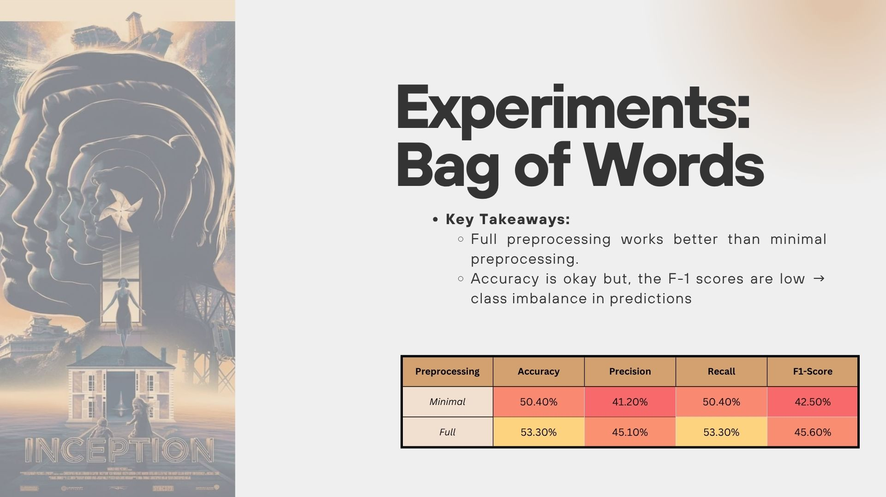
Figure 1. Bag of Words baseline. Full preprocessing outperforms minimal (F-1: 45.60% vs 42.50%).
Experiment 2 · Sentiment Lexicons Only
Removing BoW and evaluating lexicons alone: overall accuracy dropped, but precision and F-1 improved. The lexicons are better at capturing nuance across all five classes, not just the extremes.
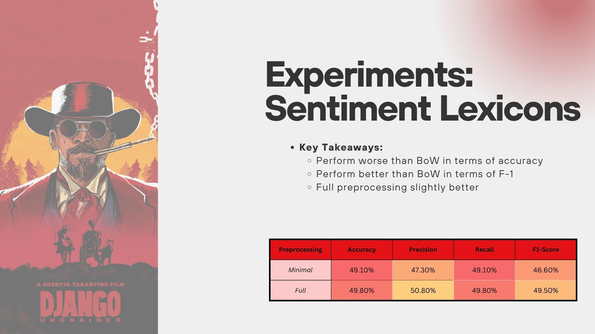
Figure 2. Sentiment Lexicons only. Precision and F-1 improve over BoW despite lower accuracy, showing lexicons capture nuance that raw word counts miss.
Experiment 3 · BoW + Sentiment Lexicons
Combining both feature types produced the largest single jump: F-1 climbed to 54.2% from a prior high of 49.5%. Minimal and full preprocessing were now performing similarly, hinting that added features reduce the impact of preprocessing choice.
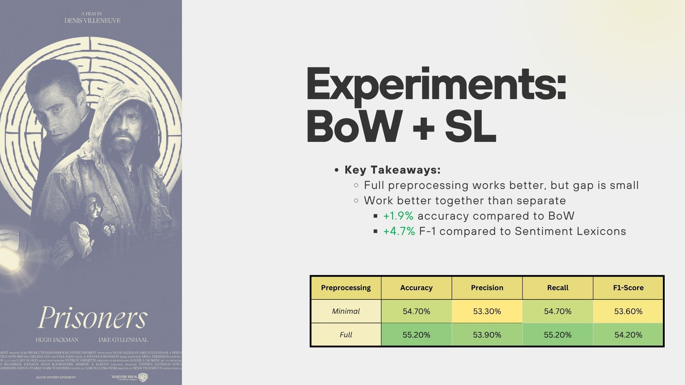
Figure 3. BoW + Sentiment Lexicons. F-1 jumps to 54.2%, the largest single gain across all experiments.
Experiment 4 · BoW + Sentiment Lexicons + Negation
Adding negation features produced further gains, and minimal preprocessing outperformed full for the first time. This is the inflection point where more complex models benefit from less aggressive text cleaning.
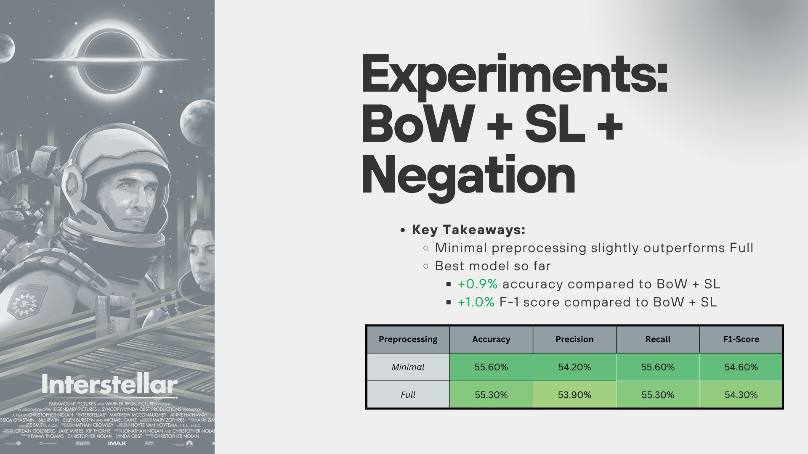
Figure 4. BoW + SL + Negation. Best feature set so far. Minimal preprocessing wins for the first time (+0.9% accuracy, +1.0% F-1 over BoW + SL).
Experiments 5 and 6 · POS Tags and All Features
POS tags decreased performance across the board, with F-1 dropping roughly 1%. Combining all features, including both POS and negation, did not recover the losses. POS tags appear to add noise rather than signal for phrase-level sentiment.
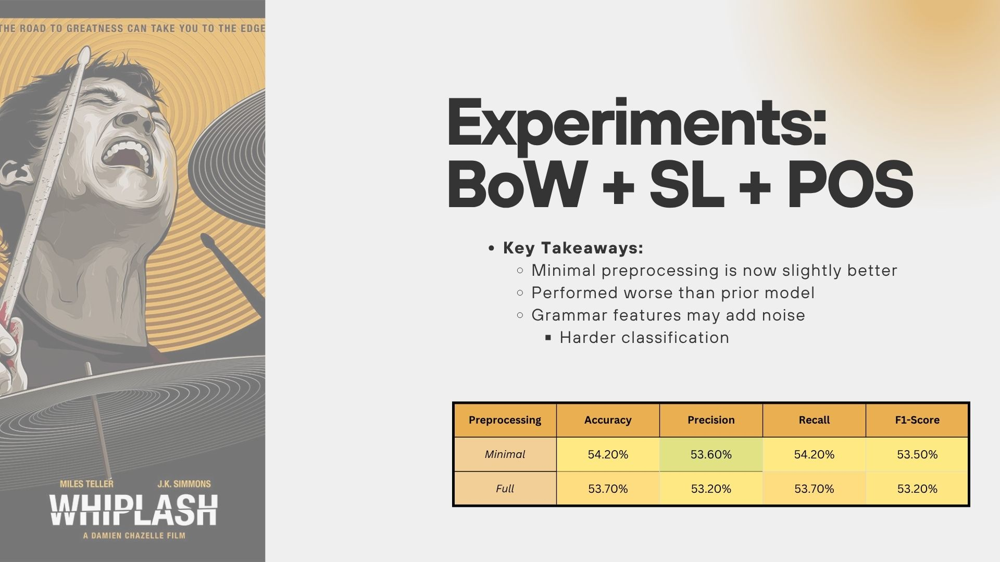
Figure 5. BoW + SL + POS Tags. Performance drops vs negation model.
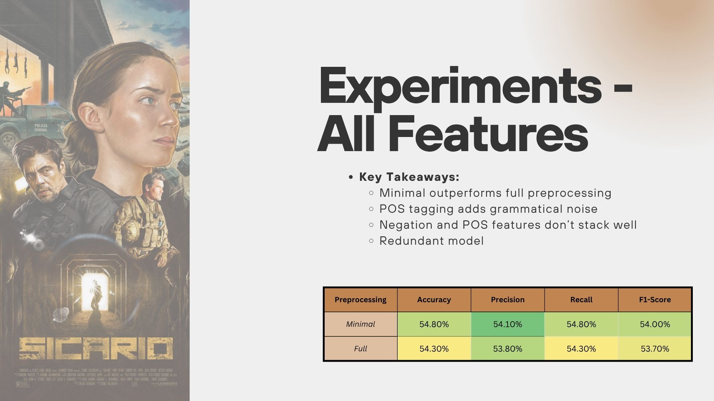
Figure 6. All features. Stacking POS with negation does not improve over negation alone.
Experiment 7 · Classifier Comparison
All three classifiers were tested on the best feature set (BoW + lexicons + negation) at 10,000 samples. Logistic Regression with minimal preprocessing was the clear winner: 58.1% accuracy, 55.3% F-1. Logistic Regression and SVM outperformed Naive Bayes by +2.3% accuracy and +2.5% F-1, consistent with Pang et al. (2002).
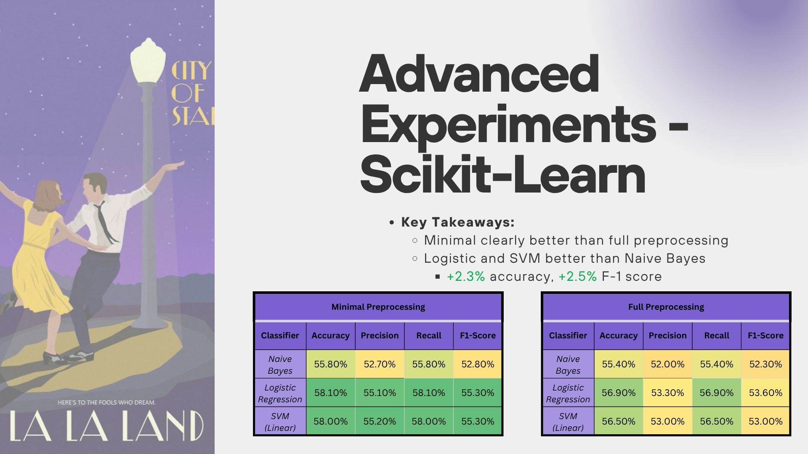
Figure 7. Classifier comparison on the best feature set. Logistic Regression and SVM both outperform Naive Bayes under minimal preprocessing.
Summary of Results
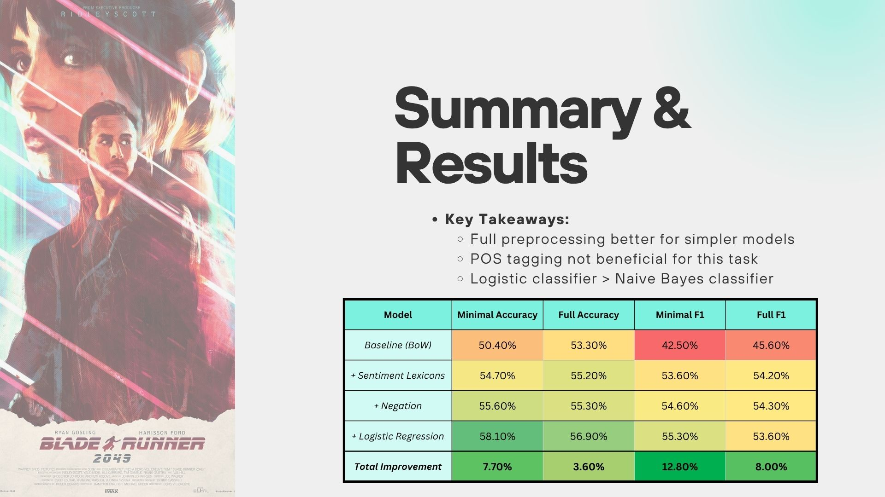
Figure 8. Full results summary. Total improvement: +7.7% accuracy, +12.8% F-1 from BoW baseline to final Logistic Regression model.
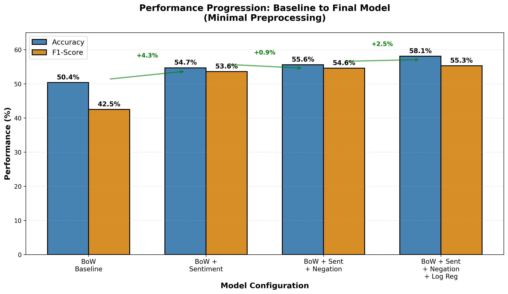
Figure 9. Performance progression under minimal preprocessing. Each meaningful feature addition produced incremental gains.
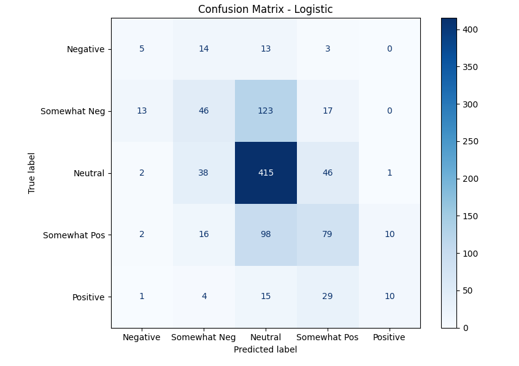
Figure 10. Confusion matrix for the final Logistic Regression model. The neutral class dominates predictions, reflecting its ~51% share of training samples.
What the Model Got Right, and What's Still Hard
Five-class sentiment is genuinely difficult. Adjacent categories like "somewhat negative" and "neutral" are hard to separate even for humans. With that context, the results tell a clear story.
BoW alone topped out at 45.6% F-1. Lexicons alone improved precision but hurt accuracy. Together, they jumped to 54.2%. Adding negation pushed further. The lesson: sentiment is multi-dimensional, and features that address different dimensions compound.
Full preprocessing won early with simple BoW. But as models gained complexity, minimal preprocessing consistently outperformed. Stopwords, punctuation, and capitalization carry signal that aggressive cleaning throws away.
Logistic Regression and SVM both outperformed Naive Bayes by roughly 2.3% accuracy and 2.5% F-1 on the same features. For fine-grained multi-class problems, probabilistic simplicity is a ceiling, not a floor.
POS tags, expected to capture adjective and adverb-heavy sentiment language, decreased performance every time they were added. Custom negation features, which detect how words like "not" flip sentiment, consistently improved results. Lexical meaning beat grammatical structure.
The biggest remaining limitation is unigram tokenization: "not good" gets split into two tokens, treating "good" as positive. Bigrams and trigrams would capture these multi-word reversals more accurately. Contextual models like BERT, which encode full sentence meaning, would likely push accuracy significantly higher. There is also room to test a simpler binary classification version to isolate how much of the difficulty is inherent to five-class granularity versus the feature design itself.
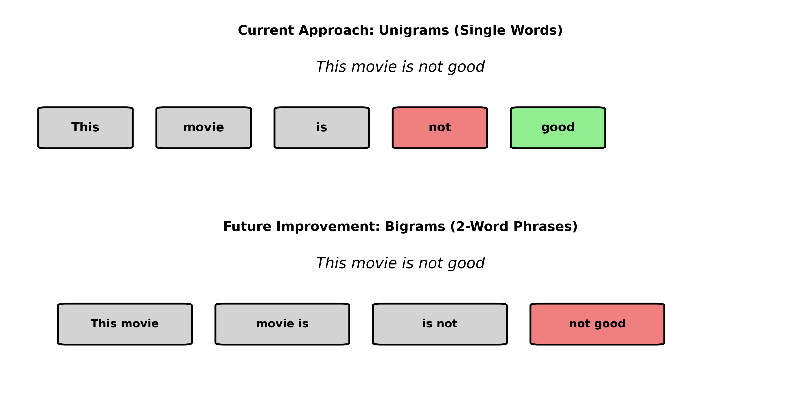
Figure 11. Unigram vs bigram tokenization. A bigram approach would capture "not good" as a single negative unit instead of treating "good" as positive.